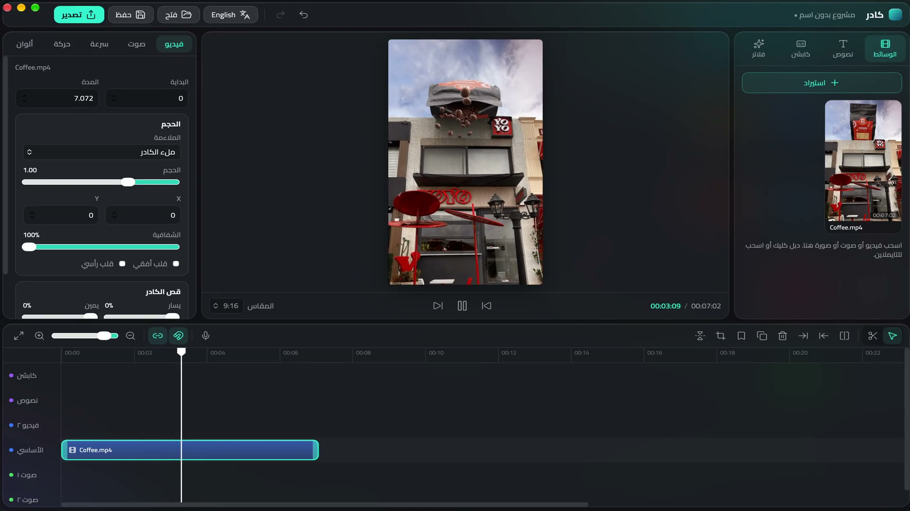

قص وتايملاين، كابشن عربي تلقائي بتوقيت كل كلمة، نصوص وموشن، ألوان وفلاتر، وتصدير لحد 4K. كله على جهازك.

مصمم للمحتوى العربي من الأول، مش ترجمة.
بيفرّغ الكلام ويحط كل كلمة في وقتها. الصوت ما بيطلعش من جهازك.
مسار مغناطيسي، قص، تقسيم، علامات، وتراكات متعددة.
ستايلات جاهزة وحركة دخول وخروج للنصوص.
فلاتر جاهزة وتعديل إضاءة وتشبع، والمعاينة زي التصدير بالظبط.
H.264 وHEVC، مع تسريع الهاردوير على الماك.
سجّل التعليق الصوتي جوه البرنامج مباشرة.
كل نسخة جديدة بتوصلك لوحدها.
البرنامج مجاني ومش من متجر أبل أو مايكروسوفت، فالنظام هيسألك أول مرة بس.
محتاج ماك بمعالج Apple (M1 أو أحدث) و macOS 12 أو أحدث.
Windows 10 أو 11، 64-bit.